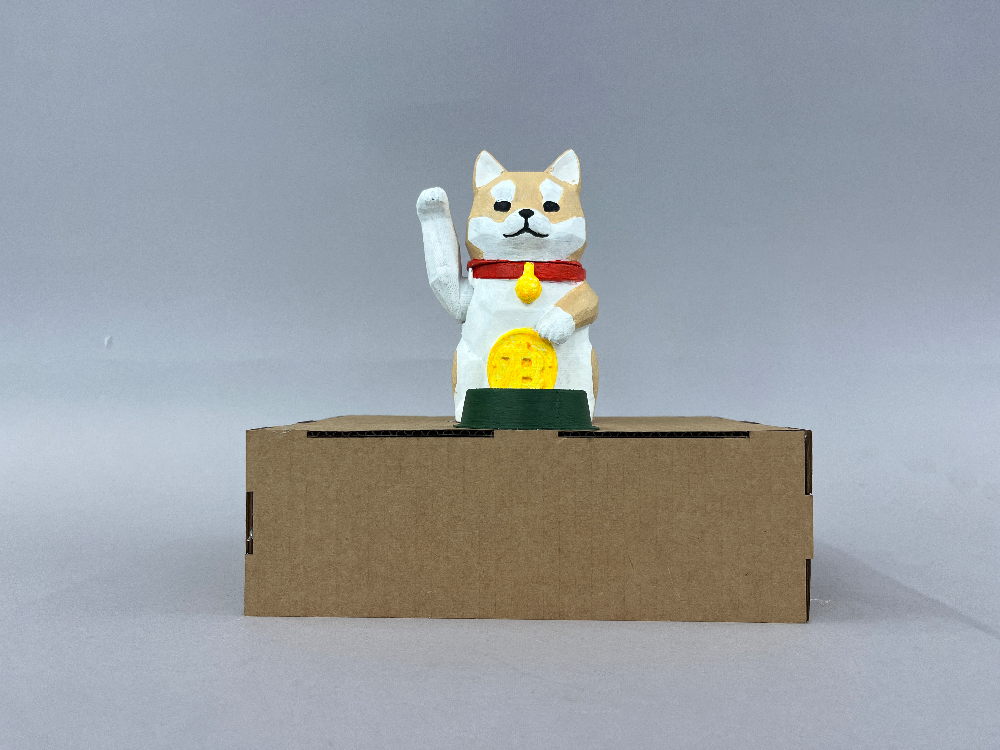
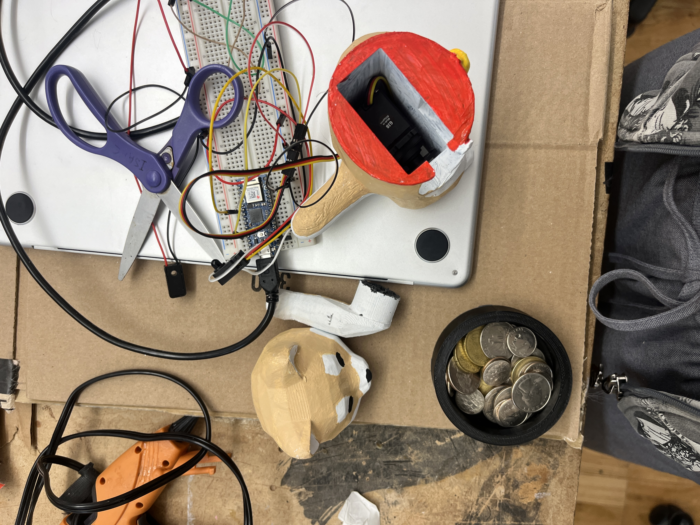

Concept
For this project, I wanted to explore the modern concept of worship—how people place faith in figures like Elon Musk or abstract concepts like cryptocurrency. Drawing inspiration from the traditional Maneki Neko, a symbol of luck and fortune, I created an interactive Doge sculpture with a coin slot. The arm waves faster as more coins are fed to the dog. Similar to the way the Maneki Neko waves in hopes of bringing good fortune, the Doge grants "luck" only when more coins are inserted. This interaction parallels how people today invest in data, technology, or influential figures, seeking returns in much the same way offerings were made in the past.
Process

To create the dog statue, I started by using an image generator to blend the iconic shape of a Maneki Neko with a Shiba Inu. Using that image, I modeled the 3D form and designed an internal compartment to house a motor, along with an attatchment to connect the arm to the motor. I also modeled a dog bowl with a coin slot. After printing the parts, I hand-painted each one and assembled them onto a laser-cut box. The waving motion is powered by a servo motor, and a break beam sensor inside the bowl detects when a coin is offered, activating the arm.